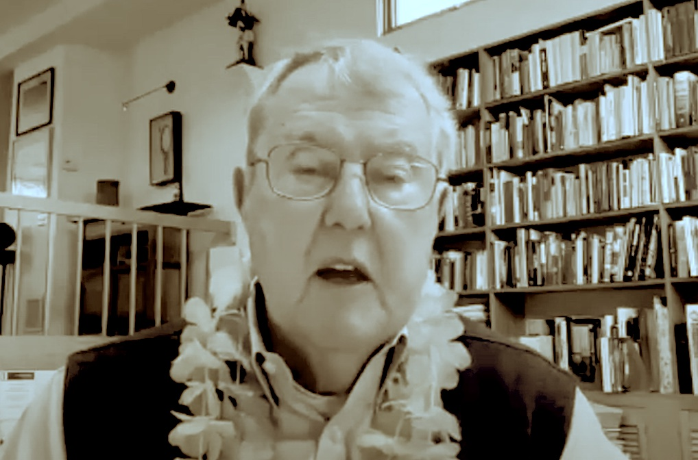

Preface
On February 28, 2024, thirteen Pennsylvania residents seeking information and analysis about the invasion of Ukraine by the Russian Federation met on Zoom with former Ambassador Thomas W. Simons, Jr. Provided in this site are notes and links to readings and analyses assembled for a meeting
Thomas W. Simons served as Ambassador to Poland from 1990 to 1993 and Ambassador to Pakistan from 1996 to 1998. He brought to the meeting a wealth of knowledge and experience in international relations and service (read his bio and documentation of his career as a foreign service officer). See, also:
Nomination of Thomas W. Simons, Jr., To Be United States Ambassador to Poland in May 1990. This document is held among the Public Papers of the Presidential Library and Museum of George H.W.Bush
Thomas W. Simons, Jr. A Wikipedia biography of former Ambassador Simons.
Thomas W. Simons, Jr. (1938 -). A record of former Ambassador Simon’s career foreign service compiled by the Office of the Historian, U.S. Department of State.
Richard Nixon’s ‘crazy’ idea: Make befriending the Chinese Communist Party his legacy. A 2022 article with a link to an audio version of a WBUR Radio (Boston) story about the role played by former Ambassador Simons as a political officer during the cat-and-mouse games played to seize opportunities to negotiate with the Chinese, in what is described as The Great Wager, to establish Richard Nixon’s foreign policy legacy. Teaser: Action takes place at a fashion show.
Thomas W. Simons, Jr. A transcript of a 2004 interview with former Ambassador Simons by Charles Stuart Kennedy for The Association for Diplomatic Studies and Training, Foreign Affairs Oral History Project.
Mutually Assured Destruction, South Asian Style. An article authored by former Ambassador Simons published in Hoover Digest in 2000.
Dr. Simons Speaking During Zoom Meeting on February 28, 2024
 Stream the Video
Recording from Google
But, First, A Roadmap For These Notes
These notes were completed on February 22, 2024, so they do not necessarily reflect the state of affaits in Ukraine as you are reading this document.
My notes are organized into topics under two main headings: (1) Ukraine, In Brief – I summarize some key features about the country and (2) The War – I write a brief narrative about the war and, then, list pre–invasion and post–invasion events in the execution of Putin’s war.
Ukraine, in Brief
Information about the features of the country of Ukraine is summarized in this major section of my notes. I group general information about Ukraine around the following key elements: the land, history, culture, economy, population and migration, and the structure of government. Although I devote the subsequent major section of this document to notes I gathered about the war itself, for coherence, I found it necessary to integrate references to the effects of the war in this current section.
The Land
I summarize my notes about Ukrainian physical features of geography, topography, and resources.
Geography
Ukraine is located in Eastern Europe. Ukraine’s 4,345-mile international border is adjacent to Moldova, Poland, Hungary, Slovakia, Belarus, Russia (its longest border contiguous with another country, 1,282 miles), and Romania. Most of these borders were inherited by Ukraine from the Ukrainian Soviet Socialist Republic after the collapse of the former Soviet Union.
The country also has a maritime border in the Sea of Azov and the Black Sea, where Ukraine has an Exclusive Economic Zone.1 The maritime border is 842 miles long and is shared with Romania and (mostly) Russia. Ukraine is separated from Russia by the Kerch Strait, which connects the Sea of Azov to the Black Sea. The 1936 Montreax Convention2 covering the Bosporus and Dardanelles straits connecting the Black Sea to the Mediterranean Sea specifies unlimited Mediterranean access to countries on the Black Sea.
Lying between latitudes 44° and 53° N, and longitudes 22° and 41° E, Ukraine covers an area of 233,062 mi2. In 2014, Russia covertly invaded and illegally annexed Crimea (an internationally unrecognized annexation3). Crimea is a peninsula connected to the main Ukrainian land mass by the Isthmus of Perekop, a 3.1–4.3 mile-wide strategically important strip of land where many battles over land and resources have occurred throughout history and most recently. Ukraine continues to claim sovereignty over the Crimean peninsula.
Topography & Features
Topographically, Ukraine is divided into an area of level plains and a mountainous region. Much of central Ukraine is covered by plateaus and fertile plains (aka steppes), which are somewhat hilly areas of grasslands and shrublands. Mountains constitute about 5% of Ukraine’s land mass. The northern reaches of the Carpathian Mountains are located in the southwestern corner of Western Ukraine. The Crimean Mountains run parallel to the southeastern coast of Crimea. Mountains constitute about 5% of Ukraine’s land mass. Ukraine has a comparatively low average elevation of 574 feet above sea level. The highest mountain peak4 is 6,762 feet high.
Approximately 23,000 rivers flow in Ukraine. Most of the country’s rivers drain into the Black Sea and the Sea of Azov5 and are part of the larger Mediterranean basin.6 The country’s longest and Europe’s fourth longest river is the 1,350-mile transboundary Dnieper7 that travels from central Russia to the port city of Kherson. Hydroelectric stations on the Dnieper have produced as much as 10% of electricity consumed in Ukraine.8 The river suffers pollution from agriculture fertilizers and wastes and is susceptible to leakage of radioactive waste.9 Segments of the Dnieper River have acted as part of the defensive lines between territory controlled by Russians and Ukrainians since the 2022 Russian invasion.
Resources
Ukraine holds a wealth of resources within its diverse landscape. From fertile farmlands feeding the world to mineral deposits fueling industry, these resources have shaped the country’s economic and geopolitical landscape for centuries. However, these very riches have also become a focal point of conflict, particularly in the ongoing war with Russia. Also, although Ukraine possesses valuable natural resources, it faces challenges in their sustainable management. Environmental issues, including soil degradation, water pollution, and air pollution, require attention and concerted efforts.
Agriculture
Stretching across fertile black soil regions known as chernozems,10 Ukraine boasts some of the most productive agricultural land in the world, which is a reason that Ukraine is termed the “breadbasket of Europe.” The World Economic Forum11 indicated that Ukraine is one of the world’s top exporters of staple grains. The World Food Programme (WTF)12 received 40% of its wheat from Ukraine before the war.13 Now the WTF provides food to Ukraine.
| Food Exported (ordered by dollar value) |
Share of Global Exports | Rank Among Global Exporters |
|---|---|---|
| Sunflower oil | 46% | 1st |
| Corn | 12% | 4th |
| Wheat | 9% | 5th |
| Rapeseed14 | 20% | 3rd |
| Barley | 17% | 3rd |
Many nations depend on food exports from Ukraine.The war’s disruptions of Ukraine’s supply of foods to the world not only will affect prosperous European nations. But, many poorer nations in the Middle East and Africa also rely on Ukrainian wheat and corn. The war’s impact of Ukrainian agriculture creates the specter of wide-ranging food insecurity.
Agriculture underpins the livelihoods of millions of Ukrainians and constitutes a significant portion of the national economy. Yet, the war has severely disrupted agricultural production, impacting global food security and highlighting the vulnerability of this crucial resource.
Minerals
Beyond its farmlands, Ukraine hides a treasure trove of minerals. It holds the world’s largest deposits of manganese ore, critical for steel production, and ranks among the top five producers of titanium, used in aerospace and other industries. The country also boasts rich reserves of iron ore, uranium, lithium, and rare earth elements crucial for the burgeoning green technology sector. Coal has been historically a critical Ukraine fossil fuel industry.15 Ukraine was ranked 10th in the world in 2019 for reserves of uranium and 9th in historical uranium production by 2014.16 The country’s mineral wealth fuels domestic industries and attracts foreign investment, but also fuels potential exploitation and environmental concerns.
Energy
Ukraine sits at a crucial intersection of energy pipelines, historically serving as a transit route for Russian gas to Europe.17 However, the country boasts substantial natural gas reserves of its own and had been making strides towards energy independence before the war with the Russian Federation. Additionally, Ukraine holds vast potential for renewable energy, particularly solar and wind power. Navigating the complex energy landscape, balancing regional dependence with diversification and sustainability, remains a key challenge.
Biodiversity
Ukraine’s diverse ecosystems, ranging from the Carpathian Mountains to the Black Sea coast, contribute to its rich biodiversity.18 The country is home to various plant and animal species, some unique to the region. Conservation efforts are crucial to preserving this biodiversity, and initiatives had been underway pre-war to protect natural habitats and promote sustainable practices.
Significant Resource Issues: the war…the war…the war
Although Ukraine’s natural resources offer immense potential, a “resource curse”19 hangs heavy. Unequal distribution of resource wealth can exacerbate inequality and fuel corruption. Additionally, dependence on specific resources creates vulnerability to price fluctuations and the potential for external manipulation. The current conflict with Russia exemplifies this dependency, with resource-rich areas becoming major battlegrounds and control over resources being a strategic objective.
The war in Ukraine is the 800-lb gorilla in the room. It has had a catastrophic impact on the country’s natural resources, exacerbating existing problems and creating new ones. The full effects of the war on Ukraine’s natural resources are still unfolding, and the long-term consequences will likely be felt for years to come.
Fighting has severely disrupted the planting, harvesting, and transportation of agricultural products. Millions of acres of land are unusable due to mines, unexploded ordnance, and military activity. The war has led to food shortages and rising prices within Ukraine and contributed to global food insecurity, particularly for wheat and corn. Infrastructure damage, soil contamination, and displacement of farmers will affect agricultural productivity for years to come.
Russia has seized areas rich in minerals like iron ore, manganese, and rare earth elements, potentially exploiting them to finance its war effort. Power plants, gas pipelines, and refineries have been targeted, affecting domestic energy supply and potentially fueling further environmental damage. Mineral and energy exports have significantly dropped due to infrastructure damage and sanctions, impacting the economy and contributing to global energy price fluctuations.
Forests are being cleared for military purposes and fuel, leading to habitat loss and soil erosion. Pollution from military activity and damaged infrastructure threatens water quality and access for millions of Ukrainians. The war disrupts ecosystems and threatens endangered species. Long-term ecological consequences are certain.
The war has caused significant environmental damage, with long-term consequences for air, water, and soil quality. Disruptions to resource extraction, processing, and exports have severely impacted the Ukrainian economy, hindering recovery efforts. Air and water pollution, coupled with unexploded ordnance and hazardous materials, pose significant health risks to Ukrainians.
Rebuilding Ukraine’s resource sector will require significant international support and investment, focusing on sustainability and responsible resource management. Decontamination, ecosystem restoration, and transitioning to renewable energy sources are crucial for long-term environmental health. Addressing the underlying causes of the war, including resource control and inequality, is essential for ensuring lasting peace and sustainable development in Ukraine.
Tapestry of History
Ukraine’s history is a tapestry woven with threads of triumph and tragedy, resilience and resistance. From the ancient roots of Kyivan Rus to the struggles for independence and the contemporary challenges, Ukraine’s journey reflects the intricate interplay of cultural, political, and geopolitical forces. The Economist published “A short history of Russia and Ukraine” which critically examines, with maps, Putin’s tortured understanding of Ukraine’s provenance. I made a copy of this document available for you to download as an Adobe PDF file.
In this part of this document, I digest my notes about Ukraine’s ancient roots, a period of Mongolian domination and Cossack rebellion, the creation of a Cossack state, 18th-century imperial struggles, turmoil in the 20th century, and, last, Ukrainian independence and modern challenges. :::
Ancient Roots
The history of Ukraine can be traced back to ancient times when the region was inhabited by various nomadic tribes and early agricultural communities. The Scythians, Sarmatians, and Huns20 left their imprint on the land by contributing to Ukraine’s cultural mosaic. The medieval state of Kyivan Rus,21 established in the 9th century, played a crucial role in shaping the region’s identity. Kyiv (or is that Kiev?22), its capital, emerged as a center of trade, culture, and religion, connecting Eastern and Western Europe.
Mongol Domination & Cossack Era
In the 13th century, the Mongols23 invaded Kyivan Rus, subjugating the region for nearly two centuries. This period of Mongol domination left a lasting impact on Ukraine, influencing its political structure and social dynamics. However, by the mid-17th century, the Cossacks,24 a distinct warrior class, rose to prominence. Led by charismatic leaders such as Bohdan Khmelnytsky,25 the Cossacks rebelled against both Polish and Russian rule, seeking autonomy for Ukraine.
The Cossack Hetmanate
The Treaty of Pereyaslav26 in 1654 marked a pivotal moment for Ukraine, establishing a degree of autonomy under Russian suzerainty.27 This led to the creation of the Cossack Hetmanate,28 a semi-autonomous state within the Russian Empire. However, this autonomy was short-lived, as Ukraine became a battleground in the ongoing conflicts between Russia, Poland, and the Ottoman Empire.
Imperial Struggles & Division
The 18th century witnessed a series of partitions that divided Ukraine among Russia, Austria, and Poland. This era of imperial struggles further fragmented the Ukrainian territories, leading to the suppression of the Ukrainian language and culture. Nevertheless, a sense of national identity persisted among the Ukrainian people, fueled by cultural and religious ties.
The 20th Century: Turmoil & Independence
The 20th century brought unprecedented challenges and opportunities for Ukraine. The aftermath of World War I and the Russian Revolution allowed Ukraine to declare its independence in 1918 briefly. However, this new-found sovereignty was short-lived, as the country soon became a battleground during the Russian Civil War. Eventually, Ukraine was incorporated into the Soviet Union in 1922.
World War II & The Holodomor
World War II brought further devastation to Ukraine, with Nazi occupation leading to mass atrocities and the infamous Holodomor29 – a human-made famine orchestrated by Joseph Stalin, resulting in the deaths of millions of Ukrainians. The post-war era saw Ukraine as a vital Soviet republic, contributing significantly to the USSR’s industrial and agricultural output.
Independence & Contemporary Challenges
The winds of change swept across Eastern Europe in the late 20th century, culminating in the dissolution of the Soviet Union in 1991. Ukraine declared its independence, embarking on a journey of nation-building. However, the path to stability has been fraught with challenges, including economic struggles, political upheavals, and tensions with Russia, particularly evident in the annexation of Crimea in 2014.
A Kaleidoscope Of Culture
Ukraine’s cultural heritage is a mosaic that reflects the influences of various civilizations, its agrarian roots, and its people’s deep connection to traditions and folklore. I touch lightly on cultural themes influenced by history, language and literature, folk traditions and celebrations, arts and crafts, cuisine, role of religion, and modern turmoil.
Historical Influences On Culture
Ukraine’s cultural heritage is a mosaic reflecting various civilizations’ influences, agrarian roots, and people’s deep connection to traditions and folklore. The ancient roots of Kyivan Rus laid the foundation for Ukrainian culture, with its capital, Kyiv, serving as a nexus for trade, religion, and art. The Mongol invasion, Cossack era, and imperial partitions introduced new layers to the cultural fabric, each leaving an indelible mark on Ukrainian identity.
Language & Literature
The Ukrainian language is a cornerstone of the nation’s culture, serving as a vehicle for preserving and expressing its unique identity. Ukrainian literature, dating back to medieval times with works like “The Tale of Igor’s Campaign,30” has played a crucial role in shaping the national consciousness. Writers like Taras Shevchenko31 and Ivan Franko32 are celebrated as literary giants who championed Ukrainian language and culture during times of suppression. Among prominent contemporary Ukrainian writers and poets are Serhiy Zhadan, Oksana Zabuzhko, and Andrey Kurkov.33
Folk Traditions & Celebrations
Ukraine is renowned for its colorful and diverse folk traditions, with elaborate customs passed down through generations. Traditional music, dance, and vibrant costumes are central elements of Ukrainian celebrations. The annual festival of Ivan Kupala,34 celebrating the summer solstice, showcases traditional rituals, songs, and dances, highlighting the deep connection between Ukrainians and the cycles of nature.
Visual Arts & Crafts
Ukraine’s visual arts and crafts are a testament to its creativity and craftsmanship. Iconography, a tradition dating back to the Byzantine influence, is a distinctive form of religious art in Ukraine. The intricate Pysanky,35 beautifully decorated Easter eggs, are another manifestation of the nation’s artistic prowess. Renowned painters like Kazimir Malevich36 and Ivan Aivazovsky37 have left an indelible mark on the global art scene, embodying Ukraine’s contribution to visual arts. Maria Primachenko38 was a Ukrainian village folk artist involved with drawing, embroidery and painting on ceramics. Ali Mohammed is a prominent Ukrainian Muslim landscape painter.39
Cuisine
Ukrainian cuisine is a delectable fusion of flavors, reflecting the country’s agrarian roots and the diverse influences it has absorbed over the centuries. Borscht,40 a beetroot-based soup, pierogi,41 and varenyky (dumplings)42 are iconic Ukrainian dishes that have become beloved staples. The communal aspect of sharing meals is deeply ingrained in Ukrainian culture, fostering a sense of community and connection.
Religious Diversity
Religion has played a significant role in shaping Ukrainian culture. While Orthodox Christianity is predominant, Ukraine is home to various religious communities, including Greek Catholics, Roman Catholics, and Jewish communities. Islam has had a significant place in Ukrainian culture.43This religious diversity has contributed to a multicultural tapestry, enriching the cultural landscape with different traditions, rituals, and architectural styles.
Modern Cultural Expression
In contemporary Ukraine, cultural expression continues to evolve, blending tradition with modern influences. The country’s music scene encompasses a wide range of genres, from traditional folk to contemporary pop and rock. Ukrainian cinema, with directors like Sergei Paradjanov44 and Oles Sanin,45 has gained international acclaim. The fusion of traditional elements with modern aesthetics is evident in the work of contemporary artists, designers, and performers.
Population & Migration
A 1970 book, The Real Majority,46 popularized the phrase, “Demography is destiny,” that is widely attributed47 to 19–century French philosopher Auguste Comte. If demography is this dominant, Ukraine’s destiny became perilous after the 2022 invasion by the Russian Federation.
Before The 2022 Invasion
Before the 2022 invasion, Ukraine’s population presented a complex picture marked by both positive and negative trends. As of January 2022, estimates varied between 41.9 million and 48.5 million, depending on methodologies and excluding disputed territories like Crimea. Over 60% of the population lived in urban areas, with Kyiv, Kharkiv,48 Dnipro,49 and Odesa50 forming major centers. Population density varied across regions, with eastern and southern parts being more densely populated than the west.
Like many European countries, Ukraine faced an aging population. The median age was around 40 years, and the share of older people (i.e., 65+ years old) was increasing steadily. Birth rates had declined for decades, leading to a shrinking population even before the conflict, as shown in @fig-fertile. This decline was partly attributed to economic challenges and emigration. Internal migration from eastern regions affected by the 2014 conflict contributed to population shifts within the country.
Skilled professionals and young people, often seeking better opportunities and stability, emigrated at a concerning rate, leading to a “brain drain.” Disparities in population growth and economic opportunities existed between eastern and western regions.
After The 2022 Invasion
Ukraine has posted significant population declines for over 30 years. The country’s population shrunk by an average of over 300,000 annually since 1993 (see @fig-totpop). However, the Russian invasion of Ukraine in 2022 has had a profound impact on the country’s population. According to a study analyzing the effect of the invasion on Ukraine’s population, the population could decline by a third over the next two decades as a result of the war.51
The ongoing Ukrainian refugee crisis and loss of territory caused by Russia’s invasion have led to a significant decline in the populations of Kyiv-controlled areas (see differences evident in @fig-inoutborder between population if estimated with 1991 or 2022 Ukrainian borders). Estimates suggest a decrease to as low as 28 million as of July 2023, down from almost 42 million in 2020.52 The war has also deepened Ukraine’s demographic crisis, with significant population losses and a steep decline in fertility rates.53
Economy
Charles Dickens opened his 1859 novel, A Tale of Two Cities, by writing, “It was the best of times, it was the worst of times.” He meant best/worst co-occurring. For Ukraine, in contrast, the “best” economy in recent times happened before the country’s invasion by the Russian Federation. Putin’s war, then, most certainly created the “worst” of Ukrainian economic times. The differences in the Ukrainian economy pre– and post–invasion could not be more stark and dispiriting.
A Portrait Before The Storm Of War
Understanding Ukraine’s pre-invasion economic landscape is crucial for comprehending the devastating impact of the 2022 invasion and the immense task of reconstruction and recovery this war will pose. Growth, income levels, and inflation generally demonstrated positive trends in the pre-invasion economy, but challenges like inequality, regional disparities, and external risks persisted.
Before the 2022 invasion by the Russian Federation, Ukraine’s economy displayed encouraging signs of progress, despite lingering challenges. Emerging from the conflict with Russia in 2014, Ukraine embarked on a path of reforms. Macroeconomic stability improved, with inflation falling from double digits in 2015 to single digits by 2020. The government implemented anti-corruption measures, attracting foreign investment and boosting business confidence.
With Ukraine’s fertile black soil, agriculture was a cornerstone of the economy, making Ukraine one of the world’s top wheat and corn exporters. Fueled by a highly skilled workforce and competitive wage rates, the IT sector emerged as a rising star to contribute significantly to exports. Additionally, Ukraine boasted a sizable industrial base, with steel and other metals playing a vital role.
Despite progress, significant hurdles remained. Oligarchic influence, though diminished, still cast a shadow over some sectors. Corruption, while tackled, continued to be a concern. Infrastructure, particularly in eastern regions, suffered from years of under-investment. The conflict with Russia in the Donbas region posed an ongoing security threat and economic burden. Russia’s 2014 annexation of Crimea and consequent sanctions impacted trade and investment.
The 2014 conflict significantly impacted Ukraine’s economy, causing GDP to shrink by 20%. Internal population displacement, infrastructure damage, and disrupted trade routes hampered recovery. The International Monetary Fund estimated that the conflict cost Ukraine $270 billion in lost output by 2020.
Despite economic progress, income inequality remained high. The eastern regions, particularly those affected by the conflict, lagged behind the west in terms of development and living standards. Poverty, though declining, still affected a significant portion of the population.
Some relevant economic numbers characterizing the Ukrainian economy during this pre-invasion period:
GDP - From 2016 to 2021, Ukraine’s GDP grew steadily, averaging around 3.4% annually. This upward trend indicated gradual economic recovery after the 2014 conflict. In 2021, Ukraine’s GDP reached $200.5 billion, placing it 59th globally. Although significant, Ukraine’s economic position remained lower than pre-2014 levels due to the impact of the 2014 conflict. Agriculture (11.4%), industry (21.3%), and services (63.6%) were the main contributors to GDP. The IT sector, within services, saw a remarkable rise, becoming a key export earner.
Personal Income – Compared to developed nations, average personal income was lower, around $6,500 annually in 2021. However, personal income showed steady growth from previous years. The wealthiest 10% held over 40% of national income, highlighting income disparity. Income levels varied significantly across regions. Eastern regions that were affected by the 2014 conflict, struggled with lower wages and higher poverty rates than the west.
Inflation – After reaching double digits in 2015, inflation gradually stabilized. By 2021, inflation stood at 5.4%, considered manageable and contributing to economic stability. Although inflation was generally controlled, certain areas like utilities and food staples experienced higher price rises, disproportionately affecting low-income groups. Global events like the pandemic and oil price fluctuations temporarily impacted inflation and stimulated adjustments by Ukraine’s central bank.
After 24 February 2022: Плисти по вді – “to float on water,” i.e., a difficult or dangerous situation…as Americans might idiomatically describe “going to hell in a handbasket”
The 2022 Russian invasion of Ukraine has had a devastating impact on the country’s economy. The Ukrainian economy entered deep recession, and widespread damage still is being inflicted. Because the war’s trajectory and long-term economic consequences remain uncertain, so recovery efforts are even more challenging. Rebuilding Ukraine’s economy will require substantial international support and investment. The International Monetary Fund estimates that the cost of reconstruction could reach $349 billion. Attracting investment and ensuring efficient use of resources will require reforms to combat corruption and improve governance.
Estimates suggest a staggering 30% contraction in Ukrainian GDP in 2022 compared to pre-war levels. This decline is one of the most severe economic contractions recently witnessed. Agriculture, industry, and services – all major contributors to GDP – have been heavily impacted. Infrastructure destruction, disrupted trade, and displacement of people have crippled economic activity.
The World Bank estimates that poverty in Ukraine increased from 5.5% to 24.2% in 2022. This increase translates to roughly 7 million more people struggling to meet basic needs. Many workplaces have shut down or experienced significant disruptions. Widespread unemployment and wage reductions have occurred, disproportionately affecting vulnerable populations. The millions of Ukrainians internally displaced due to the conflict face added financial hardships. Government resources, social safety nets, and international humanitarian aid are strained.
War–related disruptions to supply chains and agricultural production have driven up prices of essential goods such as food and fuel. To finance war efforts and support citizens, the Ukrainian government has increased money printing, resulting in additional inflationary pressure. Rising inflation erodes the purchasing power of citizens, which further exacerbates economic hardship.
Damaged and destroyed bridges, roads, factories, and other vital infrastructure require rebuilding. The invasion by the Russian Federation created immense uncertainty that deters foreign and domestic investment crucial for economic recovery. Skilled professionals fleeing the conflict generates a loss and a long-term challenge to the stock of human capital of Ukraine and further hampers economic recovery and growth.
Structure Of Government
Ukraine is the second-largest country in Europe after Russia. Kyiv is the nation’s capital and largest city, followed by Kharkiv, Dnipro, and Odesa. Ukraine’s official language is Ukrainian. Russian is also widely spoken, especially in the east and south. With the dissolution of the Union of Soviet Socialist Republics in December 1991, Ukraine gained full independence and helped to found the Commonwealth of Independent States, an association of countries that were formerly republics of the Soviet Union. Ukraine is a founding member of the United Nations.
After presenting an overview of Ukrainian government organization, I summarize the roles of the President, Prime Minister, Parliament, courts, and regional authorities.
Administrative Overview
The administrative structure of the government of Ukraine54 reflects its status as a unitary semi-presidential republic. This system combines elements of both presidential and parliamentary governance, distributing powers between the President, the Verkhovna Rada (aka parliament), and the Prime Minister. Recent amendments to the Constitution 55have strengthened the presidency at the expense of other branches, particularly the Ukrainian parliament.
President
Citizens ≥18 years old may vote. At the apex of Ukraine’s administrative structure is the President, who serves as the head of state and is elected by popular vote for a five-year term. The President56 plays a crucial role in foreign policy and represents Ukraine internationally. The President can initiate legislation. Both the president and Verkhovna Rada (a parliament; described subsequently) have veto power over legislation, creating a check on each other’s authority.
Prime Minister
A Prime Minister,57 appointed by the President, is the head of government and leads the Cabinet of Ministers58. The Cabinet is appointed by the President with the consent of the legislature, each Minister responsible for a specific government department. The Prime Minister formulates government policies, oversees the implementation of laws, and represents the executive branch in interactions with the Verkhovna Rada. The Cabinet plays a central role in the day-to-day administration of the country, managing various sectors such as finance, defense, foreign affairs, and more.
Parliament: Verkhovna Rada
The Verkhovna Rada59 is the unicameral parliament of Ukraine and holds significant legislative powers. Ukrainian citizens elect the 450 members of the Verkhovna Rada through a proportional representation system. The parliament is responsible for making laws, approving the state budget, and overseeing the actions of the executive branch. It also plays a crucial role in the approval of key appointments, including the Prime Minister and members of the Cabinet of Ministers.
Constitutional Court
Ukraine has a Constitutional Court responsible for interpreting the constitution and resolving constitutional disputes. The judiciary is independent and includes a system of courts that handle civil, criminal, and administrative cases. The highest court is the Supreme Court of Ukraine, which provides final interpretations of the law.
Regions
Ukraine is divided into various administrative units, which include oblasts (regions; see below), cities, districts, and villages. Residents elect local government bodies which are responsible for managing local affairs, infrastructure, education, healthcare, and other matters. The administrative decentralization process in recent years aimed to empower local authorities and enhance their ability to address the specific needs of their communities.
Ukraine is divided into 24 provinces called oblasts60 (see @fig-oblasts), one autonomous republic (Crimea, although this is a subject of dispute due to Russia’s annexation), and two independent cities with special oblast status—Kyiv, the capital, and Sevastopol in disputed Crimea. Each oblast has its own administrative center and local government structures.
The War
After presenting a narrative summary of Putin’s war to date, I list timelines of major pre-invasion events starting in 2014 and after the full-scale invasion of Ukraine beginning in 2022. These timelines are not exhaustive, but are more of an outline of major milestones. Also, the course of the war continues, is dynamic and is constantly shifting. As a consequence, the story of this war remains incomplete.
Brief Narrative History, 2014-2022
The current war in Ukraine began on 24 February 2022, when Russia launched a full-scale invasion of the country. The invasion followed a period of escalating tensions between the two countries, which began in 2014 with the annexation of Crimea by Russia and the outbreak of fighting in eastern astern Ukraine between Ukrainian government forces and Russian-backed separatists.
In the early days of the current war, Russian forces made rapid advances, capturing key cities and towns in southern and eastern Ukraine. However, they were soon met with fierce resistance from the Ukrainian military and civilians. This resistance slowed the Russian advance and forced a change in tactics.
As the war progressed, it became clear that Russia’s initial goal of overthrowing the Ukrainian government and installing a pro-Russian regime was not achievable. Instead, the war settled into a grinding stalemate, with both sides suffering heavy losses. In recent months, some signs of progress are evident towards a ceasefire or peace agreement. However, the fighting continues. Unclear are the duration of the war and its outcome.
Russia’s invasion of Ukraine continues to have a severe impact on human and physical capital, and the environment, with loss of life, drop in living standards and rise in poverty, as well as damage to infrastructure. Nevertheless, the International Monetary Fund characterizes the Ukrainian people as “resilient, and the authorities’ skillful policy-making and continued external support have helped support macroeconomic and financial stability.”61
Pre-Invasion, 2014-2022
November 2013: Euromaidan62 protests erupt in Ukraine against pro-Russian president.
February 2014: Russia annexes Crimea after Yanukovych63 flees Ukraine.
April 2014: War breaks out in Eastern Ukraine between Ukrainian forces and Russian-backed separatists.64
December 2021: Russia demands security guarantees from NATO, including no Ukraine membership.
January-February 2022: Russia amasses troops on the Ukrainian border.
Full-Scale Invasion, 24 February 2022 - Present
February 24: Russia launches a full-scale invasion of Ukraine, attacking major cities.
March-April 2022: Heavy fighting around Kyiv, Kharkiv, and other cities. Ukrainian forces resist fiercely.
April 2022: Russia withdraws from Kyiv region, focuses on Eastern Ukraine.
May-June 2022: Russia captures key city of Severodonetsk65 in Eastern Ukraine.
July-August 2022: Stalemate in Eastern Ukraine, heavy shelling continues.
September 2022: Ukrainian counteroffensive recaptures significant territory in Kharkiv region.
October-November 2022: Renewed Russian offensive in Eastern Ukraine, limited gains.
December 2022: Stalemate and heavy fighting across Eastern Ukraine
February 2023: Russia launches new offensive in Eastern Ukraine, slow progress.
June-August 2023: Ukrainian counteroffensive recaptures parts of Kherson and Zaporizhzhia regions.
September-November 2023: Ukrainian counteroffensive stalls, heavy fighting continues.
December 2023 - Present: Stalemate and winter offensives by both sides in Eastern Ukraine. Ongoing humanitarian crisis and international sanctions against Russia.
Current Situation (prepared on February 22, 2024)
The Institute for the Study of War66 produces high-fidelity and, where possible, street-level daily offensive campaign assessments67 of critical events related to renewed Russian aggression against Ukraine. Also, the Institute leads an effort to provide 3-D, interactive and time-lapse maps.68 of war progress. The Black Bird Group tweets69 information “Currently focused on following and analyzing the Russian invasion of Ukraine.” Project Owl OSINT70 continuously updates a Ukraine Control Map.71 Various news sources offer live coverage of the war.72
Last updated on
[1] "2024-09-17 16:37:23 EDT"Reuse
NOTES FROM PITTSBURGH by David L. Passmore is licensed under Creative Commons Attribution-ShareAlike 4.0 International

 .
.
Comments/Corrections
Provide comments about this posting or suggest changes or corrections in email to David L. Passmore.
An Exclusive Economic Zone is an area of the sea in which a sovereign state has exclusive rights regarding the exploration and use of marine resources, including energy production from water and wind, but does not include ownership of maritime features (islands, rocks and low-tide elevations).↩︎
The 1936 Montreax Convention regarding the Regime of the Straits is a United Nations agreement concerning the Dardanelles strait, the Sea of Marmara, and and the Bosporus strait. Unlimited access is designated for countries on the Sea, but countries not adjacent to the Sea may sail ships in for short stints and limited by ship size.↩︎
The annexation of Crimea by Russia in 2014 was a significant geopolitical event that followed a complex series of political and historical developments. Crimea, a peninsula on the northern coast of the Black Sea, has a long history of conflict and changing relationships with Russia and Ukraine. After the ousting of President Viktor Yanukovych. Russian troops, often referred to as “little green men,” entered Crimea and seized key government buildings. A controversial referendum was held, in which the majority of voters favored joining Russia. The annexation was widely criticized by Western governments, leading to the imposition of economic sanctions on Russia. The annexation of Crimea allowed Russia to gain control of vital energy assets and strategically important naval bases. The event was characterized by political manipulation and deep-rooted historical and cultural tensions between Russia and Ukraine. A Brookings essay, “Crimea: Six years after illegal annexation,” contains a review of the annexation and its consequences.↩︎
In the Carpathian Mountains (https://www.wikiwand.com/en/Hoverla).↩︎
Article from 2021 describing strategic position of the Sea at https://www.washingtonpost.com/world/2021/12/25/ukraine-russia-azov-sea/.↩︎
Dnieper river cascade of hydro power.↩︎
“From Russian: чернозём, also called black soil, regur soil or black cotton soil, is a black-colored soil containing a high percentage of humus (4% to 16%) and high percentages of phosphorus and ammonia compounds. Chernozem is very fertile soil and can produce high agricultural yields with its high moisture storage capacity.” From Chernozem.↩︎
The World Food Programme is the United Nations agency that provides food aid to countries in crisis.↩︎
See Washington Post article by Donald Beasley.↩︎
Rapeseed is used in production of edible vegetable oils, animal feed, and biodiesel.↩︎
Often most associated with Donets Region, an area of significant war activity..↩︎
Metric tons. See “List of countries by uranium reserves.” Historical numbers are not counted as part of production of the Union Soviet Socialist Republics.↩︎
Read report about Ukraine’s energy profile at https://iea.blob.core.windows.net/assets/ac51678f-5069-4495-9551-87040cb0c99d/UkraineEnergyProfile.pdf.↩︎
According to the American Museum of History, “The term biodiversity (from “biological diversity”) refers to the variety of life on Earth at all its levels, from genes to ecosystems, and can encompass the evolutionary, ecological, and cultural processes that sustain life.” ↩︎
“Resource curse” is a term that is used to refer to why countries that are richer in natural resources are poorer, have less economic growth and are less democratic. “When so much of an economy relies on one single resource, it’s really vulnerable to price changes in that resource” (https://www.ecnmy.org/learn/your-world/international-development/what-is-the-resource-curse/)↩︎
Scythians (https://www.britannica.com/topic/Scythian), Sarmations (https://www.britannica.com/topic/Sarmatian), and Huns (https://www.britannica.com/topic/Hun-people).↩︎
According to the World History Encyclopedia, “a medieval ((862-1242) political federation located in modern-day Belarus, Ukraine, and part of Russia (the latter named for the Rus, a Scandinavian people). The name Kievan Rus is a modern-day (19th century) designation but has the same meaning as ‘land of the Rus,’ which is how the region was known in the Middle Ages.”↩︎
“Kiev” is a transliteration from Russian characters. I attempted to use Ukrainian transliterations (e.g., “Kyiv”) rather than Russian whenever I could understand the difference and could find choices among options.↩︎
“Mongols” became an umbrella term for Mongolic-speaking tribes united under the rule of Genghis Khan in the 13th century. “At its peak, the Mongol Empire covered the most contiguous territory in history https://www.nationalgeographic.com/culture/article/mongols.”↩︎
The Cossacks were a predominantly East Slavic Orthodox Christian people who originated in the Pontic–Caspian steppe of eastern Ukraine and southern Russia. They were known for their military lifestyle and initially led a semi-nomadic existence, living around the lower bends of the Dnieper River. The term “Cossack” is derived from a Turkish word meaning “free man.” They were organized into military communities and played a significant role in defending the Russian frontier and later in the territorial expansion of the Russian Empire. The Cossacks’ history and identity were influenced by their geography, the politics and social forces of the regions they inhabited, and their own self-fashioning. See detailed description in Britannica.↩︎
The Pereyaslav Treaty secured military protection for the Cossack Hetmanate in exchange for an oath of allegiance to the Tsar from the Cossacks, church members and inhabitants of the Hetmanate (see https://www.themoscowtimes.com/2022/08/03/explainer-what-was-the-1654-treaty-of-pereyaslav-a78491).↩︎
Overlordship (“Suzerainty.” Merriam-Webster.com Dictionary, Merriam-Webster, https://www.merriam-webster.com/dictionary/suzerainty. Accessed 19 Feb. 2024.).↩︎
The name of the Ukrainian Cossack state, which existed from 1648 to 1782 (review map and timeline at https://history-maps.com/story/History-of-Ukraine/event/Cossack-Hetmanate).↩︎
The “artificial hunger” imposed by Stalin to enforce collectivism and tamp down Ukrainian nationalism left an estimated 3.9 million dead, approximately 3% of the population in 1929-1930 (see, e.g., “Demography of a man-made human catastrophe: The case of massive famine in Ukraine 1932-1933” appearing in Canadian Studies in Population.). Also documented in Anne Applebaum’s, Red Famine: Stalin’s War on Ukraine, and In Alex de Waal’s Mass Starvation: The History and Future of Famine. In 1988, the U.S. Senate affirmed in a 2018 resolution the findings of a 1988 commission that Stalin had committed genocide.↩︎
Read summary of Tale of Igor’s Campaign at https://edblogs.columbia.edu/worldepics/project/the-tale-of-igors-campaign/.Composed ca. 1188-1200 CE.↩︎
Taras Hryhorovych Shevchenko (1814-1861)was considered a great Ukrainian poet, writer, artist, and public and political figure. Read his bio at https://www.shevchenko.ca/taras-shevchenko/biography/index.cfm).↩︎
Ivan Franko (1856-1916) was a writer, scholar, and a political and civic leader, Read his bio. Perhaps yet to be realized for Ukraine, the prologue to his poem, Moses, reads in part “And yet the time will come and, radiant shining, You’ll shake the Caucasus.”↩︎
See “15 Best Ukrainian Authors Everyone Should Know” and “The 10 Best Contemporary Ukrainian Authors.”↩︎
Ivan, a widespread Christian Slavic name, is associated with John the Baptist. The name of Kupala—the god of fertility and harvest.Ivan Kupala is a summer solstice festival similar to seasonal celebrations around the world with a possible link with Cupid, the Roman god of love.↩︎
The tradition of egg decoration in Slavic cultures originated in pagan times and was transformed into the Christian Easter egg (see https://en.wikipedia.org/wiki/Egg_decorating_in_Slavic_culture).↩︎
Maria Primachenko Ms. Primachenko was a peasant woman who was born and spent all her life in the village of Bolotnya in the Kiev Oblast, situated 19 miles from Chernobyl.↩︎
See https://islam.in.ua/en/viewpoint/ukrainian-muslim-artist-ali-mohammed.↩︎
See “Islam in Ukraine” and “History of Muslims in Ukraine, Belarus and Russia.”↩︎
Parajanov created two masterpieces in a row, Shadows of Forgotten Ancestors (1964) and The Color of Pomegranates (1969) (see https://parajanov.com/sergei/).↩︎
Two of his feature films, the Mamay (2003) and The Guide (2014), were official Ukrainian entries for the Academy Award for Best Foreign Language Film. Born in 1972.↩︎
Scammon, R. W., & Wattenberg, B. J. (1970). The real majority: An extraordinary examination of the American electorate. Coward-McCann. https://www.abebooks.co.uk/book-search/title/real-majority-extraordinary-examination-americal/author/scammon-richard-wattenberg-ben/↩︎
But, apparently incorrectly says John Weeks, a demographer.↩︎
The authors of The War and the Future of Ukraine’s Population conducted a series of population projections with different assumptions about the number of casualties and refugees, and the refugees’ likelihood of return by different political scenarios. Their projections show that, if current demographic trends continue, Ukraine’s population is projected to decline by 16% over the next two decades and to become older. These trends are largely driven by past and current demographic developments of continued very low fertility and large-scale emigration starting at the turn of the century.↩︎
A Wikipedia page contains links to a large number and wide variety of demographic analyses of the Ukrainian population.↩︎
Ukraine’s Demography in the Second Year of the Full-Fledged War provide fertility estimates and describes the difficulty of obtaining demographic data from war-torn Ukraine.↩︎
The government of Ukraine underwent rapid change in the early 1990s. Ukraine proclaimed its independence on 24 August 1991 and won overwhelming popular approval in a referendum on 1 December 1991 (see https://www.britannica.com/place/Ukraine/Government-and-society).↩︎
The Constitution is the fundamental law of Ukraine. The constitution was adopted and ratified at the 5th session of the Verkhovna Rada, the parliament on 28 June 1996. All laws and other normative legal acts of Ukraine must conform to the Constitution. The right to amend the Constitution through a special legislative procedure is vested exclusively in the parliament.↩︎
The current president is Volodymyr Zelenskyy.↩︎
The prime minister of Ukraine is, on 14 February 2024, Denys Shmyhal.↩︎
The prime minister of Ukraine is, on 14 February 2024, Denys Shmyhal.↩︎
The Verkhovna Rada, developed out of the systems of the republican representative body known in the Soviet Union as the Supreme Soviet, was the legislature of the Ukrainian Soviet Socialist Republic after the dissolution of the Congress of Soviets of the Ukrainian Socialist Republic.↩︎
The term “oblast” is of Russian origin, inherited from Old East Slavic and Church Slavonic. An “oblast” is a type of administrative division in several countries, including Russia, Ukraine, Belarus, and some other post-Soviet states. It is typically translated into English as “region” or “province” (see Wikipedia article).↩︎
Review the International Monetary Fund memorandum, “Ukraine: First Review under the Extended Arrangement under the Extended Fund Facility-Press Release; Staff Report; Staff Statement; and Statement by the Executive Director for Ukraine.”↩︎
The Euromaidan, also known as the Maidan Uprising, was a series of protests and civil unrest that took place in Ukraine from 21 November 2013 to 22 February 2014. The protests were initially sparked by then-president Viktor Yanukovych’s decision not to sign an agreement that would have strengthened ties with the European Union. However, the demonstrations evolved into a broader rejection of injustice, corruption, and nepotism in Ukrainian politics and society. The protests culminated in the ousting of President Yanukovych and the election of Petro Poroshenko as president. The movement had a significant cultural impact, leading to a stronger sense of national identity and unity among Ukrainians. (See “Understanding Ukraine’s Euromaidan Protests”)↩︎
Primarily the People’s Militias of the Donetsk People’s Republic (DPR) and the Luhansk People’s Republic (LPR), were pro-Russian paramilitaries in the Donbas region of eastern Ukraine (Wikipedia article describing).↩︎
https://en.wikipedia.org/wiki/Battle_of_Sievierodonetsk_(2022)↩︎
These assessments are presented daily at the bottom of a web page, Ukraine Conflict Updates, that contains a pressed release that originated on 15 April 2022.↩︎
Interactive Map: Russia’s Invasion of Ukraine. An interactive map is updated daily.Click here to access the 3D map tool. Use of a computer is strongly recommended.The Institute for the Study of War suggests access to these maps through use of a computer rather than an iPhone or iPad.↩︎
Twitter page for the Black Bird Group.↩︎
Discord site of Project Owl OSINT.↩︎
A Google Map. Also on Google Earth.↩︎
New York Times, Wall Street Journal, and The Guardian, among others.↩︎